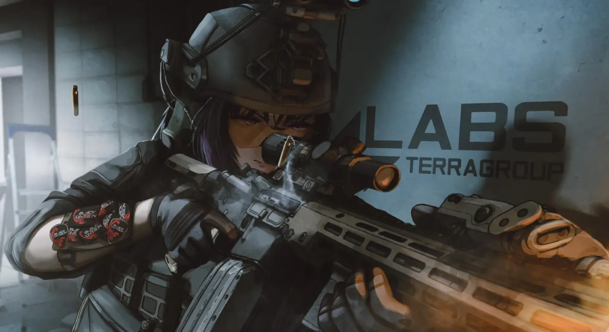

ISB Aishi
- Downloads
- 794
- Favourites
- 11
- Mod lists
- 11

⚠️Aishi is locked by default. To unlock her, you must complete the Jaeger mission “Every Hunter Knows This,” which will unlock a short questline also in Jaeger called “Outsourcing Labor.” Complete the questline to gain access to Aishi.
🚨 Advice for Lore Enthusiasts: The ISB is an original faction and has no connection to the canonical events of Escape from THE CITY or Contract Wars. However, references to past events and canonical elements, as well as those mentioned after 1.0, have been added to the faction’s history and quests, in addition to original stories.
The idea behind the ISB is to provide some external support to the USEC faction, as if there were an internal agency responsible for taking on high-risk cases. Since the BEARs were created by a secret decree of the Russian Federation Government, operate in their own country and have the
supportof the RUAF, UNTAR has plans that do not involve either side, TerraGroup is weakened in THE CITY, and Black Division is trying to clean up the evidence from both sides. USEC needed help.
Aishi is the Deputy Director and the Field Commander of the Intelligence Support Bureau (ISB), a special forces division of USEC that provides tactical and operational support for the corporation’s high-risk operations.
After TerraGroup’s substantial betrayal, in addition to USEC’s high command neglecting the PMCs in the field and the entire operation, Aishi sent her own ISB task force to investigate.
The results caused a major change in her current perspective on the conflict, on the PMCs, and on TerraGroup.
Did you like ISB’s content? Consider supporting me on Ko-Fi—it helps me buy Monster so I can keep setting up bots and assots without sleep.
- Ensure that you have SPT 4.0.3 or higher installed.
- Ensure you have the dependency WTT - CommonLib 2.0.23 or higher installed.
- Ensure you have the dependency WTT - Content Backport 1.1.0 or higher installed.
- Download the latest version of Aishi.
- Unzip the file and move the files to your SPT installation as shown in the GIF below.

Initially, Aishi does not have many languages available. I have a good knowledge of English, but as it is not my native language, there may be some inconsistencies.
I made an effort to include this language in the first version anyway. I asked some friends to review it and used translators for some words, so any reports of errors in this localization are much appreciated.
The 1.0 Aishi version currently supports the following languages.
- English
- Portuguese
- New Faction
The Intelligence Support Bureau (ISB) is a USEC division operating as a private military intelligence agency, offering field support, advanced protection services, counterintelligence, and strategic planning.
Aishi’s purpose is to serve as the hub for the ISB faction in SPT. Connected to her, the first companion mod “ISB Special Forces” is already functional (which is what I am waiting for), and new content is expected to be integrated into it.
- Deep Lore Based Quests
Aishi offers several questlines that work in a linear fashion where you can explore the history of the faction as well as stories from other related factions during a campaign that explores events prior to the widespread evacuation of Terminal.
- Progressive Quest lines.
In addition to linear stories, you can explore various progressive missions that simulate complex ISB team operations, as well as missions to upgrade combat skills, healing, and mastery of specific weapons to unlock powerful items in the assortment, crafts, and unique equipment.
- Customized and modified items.
Some quests or ISB Special Forces Operators may provide some customized and personalized equipment or ammunition. The ISB specializes in night operations, so you can find many variants of Body Armors, Chest Rigs, or Backpacks in black or night camouflage, as well as special items such as ammunition or keys.
ADVANCED INSURANCE Aishi offers a special item insurance system. It sends its best agents on patrols across the maps, ensuring fast service with a response time of 1 to 6 hours. The insurance price starts out high and decreases as your loyalty level with Aishi rises.
ADVANCED REPAIR ISB’s specialized engineers contribute to a highly efficient item repair service with an extremely low rate of permanent damage to the item.
CUSTOMIZATION ISB has several operators from different factions who had to undergo visual adjustments to meet the standards. You can purchase various customizations from the Aishi store directly with dollars or after earning achievements or completing missions.
NEW EQUIPMENT FOR BOTS
- Rogues and Goons: The Rogues maintain a lucrative alliance with the ISB. They provide intelligence and act as intermediaries with the Lightkeeper in exchange for cutting-edge equipment and ammunition. Once you install Aishi, you’ll be able to find Rogues—or even Goons—using exclusive ISB equipment.
- RUAF (Remnants): The ISB faced many problems with corrupt UNTAR officers in getting through specific roadblocks around THE CITY; after completely breaking ties with the USEC, they approached the RUAF because they shared a common interest: ending the war once and for all. As part of this mutual collaboration, the RUAF assists with the passage of ISB cargo and personnel through roadblocks, while the ISB provides modern equipment and ammunition.
COLLABORATIVE STORY QUESTLINES If you have installed Lotus you’ll see exclusive related questlines.
-
ISB Special Forces - My mod that adds Custom Bots is highly recommended for use with Aishi. In addition to providing greater immersion in the ISB operator level, it also provides greater access to the customized equipment made available by Aishi.
-
TacticalToaster Bot Mods - The three TacticalToaster mods that add custom bots are highly recommended for a better experience with Aishi and the Faction missions. . UNTAR Go Home!, RUAF Come Home!, and the latest WTT - Black Division [REDACTED] Home. Some quests from both Aishi and other Traders involve these custom bots, and although it is possible to complete them without them, it is highly recommended for the best experience.
-
Quest Presence Detector - No description needed bro, just download it. Its perfect.
-
Couturier - Couturier is highly recommended, not because it works with Aishi, but because it has really cool content. As I mentioned in the credits, turbodestroyer helped me immensely with the retextures, and if you want items in other colors, Couturier is the best option.
-
Dynamic Maps - Aishi has many different quests and objectives. For better guidance and to understand exactly where each location is, Dynamic Maps is a highly recommended choice.
-
All Quests Checkmarks - This mod is one of my favorites when I play SPT with other Custom Traders, and since Aishi requires a lot of specific items in some missions. It can be a great option if you want to plan ahead to save FIR items.
-
MoreCheckmarks - The same goal as All Quests Checkmarks. I always use one of the two with the same purpose, since both are extremely efficient at it.
-
ODT’s Item Info - Following the same premise as before. Planning certain items to save space in Stash is very efficient, and ODT’s Item Info can greatly optimize this space and information to facilitate the delivery of items to Aishi.
-
BarterItemsStacks - Still talking about items. Lack of space is something that always bothers me, and even when I fill up my Stash with boxes, it still seems to happen. Combining barter items is great, and I also recommend it for a better experience with Aishi.
-
Skipper - I can’t exactly say that I recommend Skipper because that would technically be encouraging people not to do my quests, or am I overthinking this? Hahaha. Anyway, every player has the right to skip a quest, so if you find one too boring, feel free to use Skipper!
Unfortunately, my routine is a bit exhausting, so much so that this mod took about 4 months to complete. Honestly, I don’t know if that’s a lot, but I think so. If I had more time, it would have been faster -_-
Anyway, whenever I have the opportunity to dedicate myself to building and developing the mod, I will. I’ll also leave here some future plans and also what won’t be done (maybe until I change my mind).
Planned:
- More quests and items.
Working on Aishi’s quests was fun, and I intend to eventually create new quest lines, new content, customized items, and continue developing the ISB story in THE CITY.
- Updating Existing Quests.
I created most of the quests with some specific ideas in mind, and it’s possible that as time goes by, some may prove to be too simple or challenging in a bad way, so I plan to rebalance some if they prove to be inconsistent.
- Improve the texture of some of the custom items.
Some of Aishi’s custom items, such as ISB Body Armor or Chest Rigs, have unique textures and colors. I am still figuring out the best tools I can use to customize them in the best way possible (I am currently using PS), but I intend to improve the textures and come up with cooler designs.
Unplanned:
- Backport to SPT 3.x
I thought about this at the beginning, and I know that many players still play this version of SPT, but it would take a lot of effort that I am not willing to put in at the moment. I made this mod after playing Lotus for a long time, and it served as the biggest inspiration for making Aishi. This mod was by far the mod I had the most fun with since I discovered SPT, so if you play SPT 3.x and don’t know or haven’t tried this mod, I highly recommend you give it a shot.
- Bringing new locales on my own.
My native language is Portuguese, but I do have some knowledge of English (C2 in the latest tests 😭). Bringing the English version of the mod was quite complicated due to the amount of dialogue and text, and although I could have just put all the text through a common translator or AI, I believe that this would not have created a positive experience, as I would not have been able to review possible mistakes. If anyone would like to translate the mod into a specific language, I would greatly appreciate it. Just contact me and I can instruct you on how to do it. ^^
I’m just getting started with mods for now, which means that some issues (hopefully minor ones) may arise.
This tab will list some known issues. I always encourage reports of any issues found, and I will look into how to fix them and release a patch as soon as possible.
-
Unable to access her assort or quests - If you have many Custom Traders, Aishi’s interactive panel in the traders tab may be hidden behind other game interfaces, preventing you from clicking on it. You can enable the “Trading intermediate screen” option in the “Game” tab of your settings or install the Kaeno-TraderScrolling mod to solve this problem.
-
No access to Labs - Aishi adds several keycards that can be used to access Labs; however, if you are using SVM with the “Remove the Laboratory access keycard requirement” feature, it completely overwrites the map’s keycards access list, which can cause an issue that prevents access to Labs without a keycard or even with the Vanilla Keycard. Disable this feature or obtain one of the modified keycards to restore access to Labs.
I spent some time thinking about questions that most people might have when they first try out the mod, and I want to list them here to make things easier for you.
What is ISB? Does it appear in EFT?
I’ve included some additional details in the “Description” tab, but to summarize: It’s an original “faction” that doesn’t exist in the vanilla game or story. It’s simply a reimagining of a special internal agency within USEC.
I’m having trouble with a quest / I can’t find the objective.
I’ve set up a channel on Discord with guides for all the quests that involve finding items or assembling weapons. You can access it via the “Discord for Quest Guides” tab. If you don’t have Discord and don’t want to create an account, leave a comment and I’ll reply as soon as possible.
I found a localization error in English!
Yeah… I figured that might happen. You can report it on Discord or in the comments, and I’ll look into it as soon as possible.
I didn’t like the style of the Aishi icon; it’s too anime-like for my taste.
Everyone has different tastes, and that’s perfectly fine. You can change her icon in “SPT\user\mods\ISB-Aishi\db” by replacing the file named “Aishi.png” with any other image that is 235x235 pixels. I just ask that you under no circumstances modify the current image of Aishi using AI, since it was actually created by an artist who does not approve of the use of AI.
At first, I thought about just answering questions about quests or feedback in the Forge comments, but I knew I’d end up forgetting about them, so I decided to create a Discord server to centralize feedback, bug reports, questions, and anything else you’d like to share.
Here’s the link to join –> ISB Headquarters
Everyone involved in this project is new to modding, so all the feedback we received during both the closed and public testing phases was extremely important from start to finish, and I want to express my immense gratitude to everyone for their participation. We had over 100 people during the tests, most of whom were very engaged and contributed a great deal. Below, so that you testers don’t get too lost and can see everything that’s changed, I’ll include some (extensive) update notes from both Aishi and ISB SOF
As a token of our appreciation, all test participants—whether they actively contributed or simply played—have had their Discord and other platform usernames added to the ISB Operators’ name pool. In addition, Aishi will be giving out a special reward to those who have completed the “ISB Testing” mission on their current profile. (If you participated in the tests and reset your profile, I can guide you on how to claim the reward.)
ISB Aishi Changes
Services:
Advanced Insurance: Aishi now offers the option to insure items with a fast turnaround (1–6 hours) for a higher fee. Modified ISB items remain ineligible for insurance.
Advanced Repair: Repair efficiency has been slightly reduced and the price slightly increased for better balance.
Customization: Many new outfits have been added, including variants of the ISB Daytime bots and White Tusks.
Assort: All prices have been adjusted, and more cool items have been added without quest restrictions—such as backpacks, special ammunition, and medical supplies—though some are still unlocked through quests.
Quests:
Initial Storylines: Various quality-of-life adjustments to rewards and objective display.
New Questlines: The entire continuation of the “Sanitary Investigation” questline is available, along with all follow-ups to the progression stories and the UNTAR story arc.
Items:
Chest Armor & Chest Rigs: Several new rigs and armor sets have been added, mainly heavy models like the Black Zabralo, as well as more helmets and rigs for daytime play
Cosmetics: For those who liked the gas masks and don’t want to spend time hunting down ISB bots or spawns on other bots, an unarmored option has been added and is available at the Flea Market
Keycards: The ISB technically has a much higher access level than USEC agents during the TerraGroup Contract, so all ISB keycards now open many more locations than just the Labs entrance turnstile : )
Ammo: All ammo types have been slightly rebalanced, and their models have also been updated for better visuals.
Systems
Faction Banners: Think THE CITY has too many factions? Aishi will give you a free lesson. While the map is loading, several banners with descriptions and some fun facts about the various factions in the game will be visible, including the original ISB faction.
Bot Loadouts: Rogues, Goons, and RUAF (if installed) may spawn with ISB-exclusive gear—after all, they value their partners.
ISB SOF Changes
Balance: ISB Operators shouldn’t be quite that… powerful, so they’ve undergone some adjustments to better fit the new squad composition, where they are the weakest members.
Operator Health Points: Head: 65 –> 60
Chest: 250 –> 225
Stomach: 235 –> 190
Arms: 115 –> 110
Legs: 105 –> 105 (Same)
Operator Ammo: All ammo with a high spawn probability has been replaced with a tier lower version. It will be more common to find ISB operators with slightly weaker ammo, although all the most powerful types will still remain in their active pool (but with a lower chance)
Most Common Ammunition by Caliber:
556x45NATO: M995 –> M855A1
762x51NATO: M993 –> M61
46x30mm: AP SX –> FMJ SX
762x35mm: .300 AP –> .300 CBJ
762x39mm: MAI AP –> BP
545x39: BS –> 7N40/BP
New Types of Bots: Having just the operator was too simple; now ISB squads will be a bit more coordinated with 3 types of bots.
ISB Team Leader: Always equipped with the best gear and ammunition, he prefers to stay at a distance while the rest of the team does the work.
ISB Specialist: The team’s heavyweight Breacher; armed with shotguns or LMGs, he provides suppressive fire while regular operators advance.
March Five (“The Chosen One”): A special secret boss that appears when certain conditions are met.
March Six (“The Dark Lord”): A special secret boss that appears when certain conditions are met.
New Events and Systems:
Blackout: A 50% base chance that all the lights in the Labs will go out if the ISB is present. Bring NVGs : )
Conditional Truce: If you’re at LL4 with Aishi, ISB bots won’t be hostile toward you unless you eliminate one of them; if you do, they’ll remain hostile for 6 raids.
New radios and an exclusive voice line from Aishi—after all, she coordinates her team from HQ, so you can hear her voice too. Everything is configurable via F12 (and we’re also testing the radio effect).
Working on this mod was my first experience dealing with this language, methods, and SPT itself, as well as the way THE CITY works, which made it quite challenging. along with the development of ISB Special Forces. We checked out so many mods and asked so many people to understand how everything worked, and many experienced modders from the SPT community helped us immensely.
-
Many thanks to Lunnayaluna! It may be a bit random, but even though she didn’t participate directly in this development, without Lotus this mod wouldn’t exist. After playing with Lotus for many, many hours, I really felt how much care she put into developing the quests and everything around the Trader, and that inspired me to create my own Custom Trader. I wish Luna all the best and hope she is doing well.
-
Many, many thanks to Juko for the incredible artwork, perfectly reproduced the ideas for this respected and beautiful officer.
-
A big thank you also to DGkamikaze for the incredible artwork featuring this awesome look of Aishi at Labs—it’s perfectly done.
-
Many thanks to the WTT Team, especially GrooveypenguinX. They helped with many specific questions on Discord that were very important. I would also like to take this opportunity to thank the team once again for the Content Backport of 1.0, which came much sooner than I had imagined. I was trying to backport some items from the Black Division to integrate into this mod, and it was very exhausting to learn, but their work greatly sped up the development of this mod. Furthermore, without WTT - CommonLib, this mod would be completely impossible.
-
Many thanks to ArchangelWTF for the server mod examples that were absolutely essential to get this one started.
-
Many thanks to CWX for allowing us to modify his Masterkey code. It made the work much easier in this mod with the extremely functional code he developed.
-
Many thanks to turbodestroyer for teaching me how to retexture items. Originally, the plan for the ISB Special Forces mod was to integrate it with Couturier’s items, but since he was already using Aishi’s resources, I couldn’t find a way to do that, but it’s still in the plans.
-
Many thanks to AcidPhantasm, Arys, Cj, DrakiaXYZ, HiddenCirno, EpicRangeTime, Dsnyder, Jehree, LycorisOni and many others who also answered many questions about key elements for the development of this mod. I sincerely apologize if I forgot anyone; every bit of help was greatly appreciated. 💜
-
Many thanks to Vipperexe and Loghan for contributing to the testing of this mod, new ideas and providing feedback that drove improvements during development.
To give Aishi a greater immersion in quests and objectives, some unique assets created by very talented people were used.
Assets that were used in this mod:
-
Unix 5000 Gas Mask by Eugen Vahrushin
-
MSA G1 SCBA Chemical Mask by Dan
-
KW12 Military Radio by ChanaChoochatt
-
Baofeng UV-5R Radio by Andrzej
-
H4n Pro Audio Recorder by Lillya
-
RF Broadcaster by Konstantsin
-
Keycard Model used for Black Division Keycard and USB Stick by hyrsh
-
Tablet by TatariN_174
-
Keycard Model used for Aishi’s Keycard and Pelican Case by suspensy
-
Unknown Device by Diamonddogkz
-
Sci Fi Military Badge by Trockk
-
Nuclear Block by Mapk
-
KGB Badge by solitudevibes_
-
Battery by Multipainkiller Studio
Version
1.0.0
Release Build